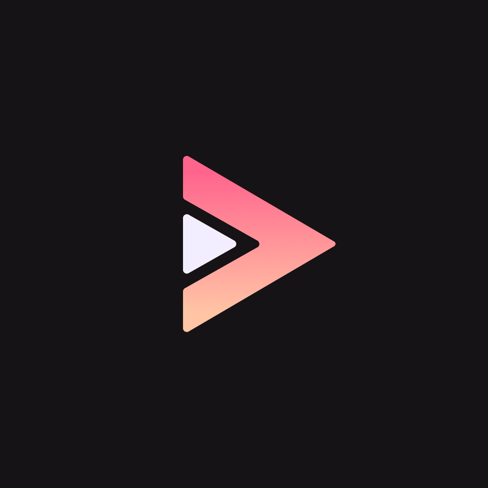
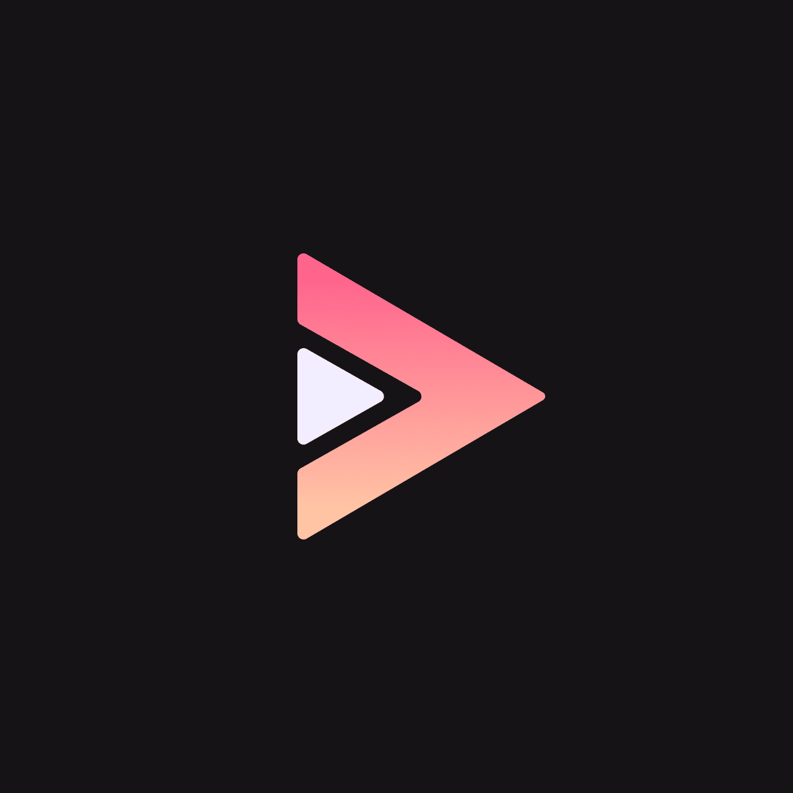
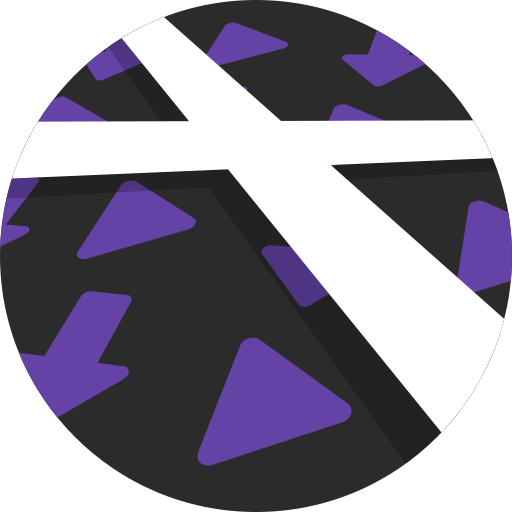
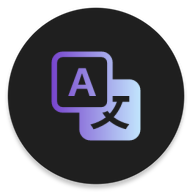

Android Apps
Heel veel apps hier zijn te installeren via F-Droid. Dit is een FOSS app store en je kan allemaal apps installeren. Soms moet je een repository (ook wel repo) toevoegen, om meer downloads te kunnen krijgen.

Aurora Store (FOSS)
Aurora store is ook een FOSS app store. F-droid kan geen apps installeren van Google Play Store, maar Aurora Store wel! Je kan het ook helemaal aanpassen van hoe je zelf wilt.
NewPipe X Sponsorblock (FOSS), Youtube ReVanced (FOSS) en LibreTube (FOSS)
Newpipe is een lichte versie van youtube met ingebouwde adblocker. Dit is de x sponsorblock versie, dus heeft ook sponsorblock functies. Met Newpipe kan je niet inloggen en misschien van je ReVanced fijner. Youtube ReVanced is een alternatief voor Youtube Vanced (deze wordt nu niet meer gemaakt, want Google was aan het gayen) en is simpelweg gratis, nog betere, Youtube premium. Youtube ReVanced moet je zelf patches met de ReVanced Manager. Als je niet de goede versie hebt, moet je die eerst downloaden van APKMirror. Zelf gebruik ik LibreTube, omdat het er goed uitziet, het een ingebouwde sponsorblock heeft en het beter is voor privacy dan NewPipe.

 

AdAway (FOSS)
AdAway is een Android adblocker, dat ook kan worden gebruikt met root. Het blocked bijna elke advertensie in apps (vooral van die kut games op de app store). AdAway staat op F-Droid.

K-9 Mail (FOSS)
K-9 Mail is een mail client voor Android. Je kan het helemaal aanpassen en het heeft veel functies. K-9 mail staat op F-Droid.
FlorisBoard (FOSS)
FlorisBoard is een toetsenbord voor Android (net als Gboard of Samsung Keyboard). Het heeft heel veel functies en is gemakkelijk te gebruiken.

Unitto (FOSS)
Unitto is een open source rekenmachine, converter en nog veel meer.

Stealth (FOSS)
Stealth is een reddit client gemaakt voor privacy. Het is snel en heeft veel features.
Organic Maps (FOSS)
Organic Maps is een map voor Android, net als Google Maps. Het heeft vele features en je kan zelfs mappen van de wereld downloaden om het offline te gebruiken!

Xtra (FOSS)
Xtra is een Twitch client en je hoeft er niet voor in te loggen.
Binary Eye (FOSS)
Binary Eye is een barcode en QR code scanner.

Translate You (FOSS)
Translate You is een translate app, zoals Google Translate. Het heeft verschillende keuzes voor translaters. Voorbeelden zijn LibreTranslate, Lingva, DeepL etc.
Myne (FOSS)
Myne is een Ebook Downloader van Project GutenBerg.